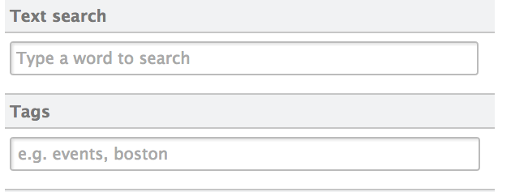

For Developers
Content Automation
Even though we have a new version coming out, we've kept Nuxeo 5.7.1 compatible with the 5.6 automation client.
You can fetch dirty properties of a modified document to send only modified properties with automation client
JSON Marshalling enhancement. You can send POJO in input or parameters. (5.7.1 only)
New operations
Add Message
Category: User Interface
Operation Id: Seam.AddMessage
Add a feedback message to be displayed. The message will be internationalized. You can specify the severity of the message using INFO, WARN and ERROR, INFO being the default. Message parameters are extracted from the context using the 'AddMessage.messageParams'.
Add entry into multi-valued metadata
Category: Document
Operation Id: AddEntryToMultivaluedProperty
Add value to the field expressed by the xpath parameter. This field must be a multivalued metadata.
Convert to given mime-type
Category: Conversion
Operation Id: Blob.Convert
Convert the input file to a file of the given mime-type and return the new file.
Create Asset(s) from file(s)
Category: Dam
Operation Id: Dam.Import
Create Asset(s) from Blob(s) using the FileManagerService.
Create Proxy Live
Category: Document
Operation Id: CreateProxyLive
This operation will create a proxy that points the given document as input. This is like a symbolic link for File System. The proxy will be created into the destination specified as parameter.
Creates directory entries
Category: Services
Operation Id: Directory.CreateEntries
Creates directory entries. Entries are sent as a JSON array. Returns the created entry ids as a JSON array.
Deletes directory entries
Category: Services
Operation Id: Directory.DeleteEntries
Deletes directory entries. Entry ids to be delete are sent through a JSON array. Returns the deleted entry ids as a JSON array.
Get Live Document
Category: Document
Operation Id: GetLiveDocument
Get the live document even if this is a Proxy or Version Document.
Get Nuxeo Principal
Category: Users & Groups
Operation Id: NuxeoPrincipal.Get
Retrieve Nuxeo principal and export it as a DocumentModel. If login parameter is not set, the operation will return information about the current user, otherwise Directory Administration rights are required.
QueryAndFetch
Category: Fetch
Operation Id: Resultset.PageProvider
Perform a query or a named provider query on the repository. The result is paginated. The result is returned as a RecordSet (QueryAndFetch) rather than as a List of Document. The query result will become the input for the next operation. If no query or provider name is given, a query returning all the documents that the user has access to will be executed.
Raise Seam events
Category: User Interface
Operation Id: Seam.RaiseEvents
Raise Seam events without parameters. This is a void operation - the input object is returned back as the output
Reads directory entries
Category: Services
Operation Id: Directory.ReadEntries
Reads directory entries. Entry ids to be read are sent as a JSON array. Returns the entries as a JSON array of JSON objects containing all fields.
Remove Entry Of Multivalued Property
Category: Document
Operation Id: RemoveEntryOfMultivaluedProperty
Removes the first entry of the giving value in the multivalued xpath, does nothing if does not exist. If 'is Remove All' is checked, all entry instances in the list will be removed. if not then just the first one found will be removed.
UI Selected documents form list
Category: Fetch
Operation Id: Seam.GetDocumentsFromSelectionList
Fetch the documents selected in the selection list passed as a parameter. If the list name is empty, the current folder selection list is used.
Updates directory entries
Category: Services
Operation Id: Directory.UpdateEntries
Updates directory entries. Entries to be updated are sent as a JSON array. Returns the updated entry ids as a JSON array of JSON objects containing all fields.
CSS 3 Support in Theme Engine
The flute CSS parser has now been replaced by phloc-css, allowing CSS3 to be used in the Theme engine.
UI Style Guide
The Nuxeo UI Style Guide is an online help to design your content, explore all the available CSS classes for the different elements, and to check the list of icons embedded in the platform.
UI Framework
Widget Label properties now accept an EL expression. This allows you to have dynamic labels.
Every richfaces ajax call use a global default ajax event queue. You can of course still specify your own queue. This results in more stable pages.
HTML5 PlaceHolder
You can use the HTML5 placeHolder attribute on inputtext and textarea. It's available as a widget property. You can put text(that will be translated) or an EL.

New drop zone Widget
This widget allows you to execute an operation with the files you've dropped as input.
Widget Actions
One can use automatic JS confirmation popup. If you add a confirmMessage property in the actions, it generates the appropriate js method. It accepts any EL as parameter. Here's an example:
<action id="JenkinsReportSendMail">
<properties>
<property name="confirmMessage">label.jenkins.sendMail.confirm</property>
<propertyList name="confirmMessageArgs">
<value>#{docSuggestionActions.getDocumentWithId(currentSuperSpace.id)
.getPropertyValue('jenkinsreports:report_email')}</value>
</propertyList>
</properties>
</action>
messages:
label.jenkins.sendMail.confirm=This will send an email to {0},
are you sure that you would like to continue?
You can now include widgets that render actions. This is particularly useful in Nuxeo Studio. This allows us to easily blend different action types like a submit button, an outgoing link and an action that opens a fancybox. You can also merge all of them in any order you want.
We have a better support of form inside fancybox opened by actions. You can submit the associated form without submitting every other form on the page. No need to do nested form anymore.
You can mix any type of action. If one action does not support ajax (like a download), it can be in the same tool bar as an ajax action.
You can associate selected documents of a content view to actions outside the content view. That's how we made bulk edit.
We allow resetting of JSF components state when using ajax. JSF action listener #{jsfResetActions.resetComponents} can be used in actions that need to reset all components in the same JSF naming container.
Nuxeo Visible Content Store (VCS)
Enhancements
Single datasource mode, removes the extra cost of XA transactions when all datasources points to the same database (which is the most common setup). It simplifies configuration and enhances performance.
Soft delete, more efficient deletion using delayed batching.
Optimized id generation, using database-native sequences (PostgreSQL, SQL Server) or UUIDs (PostgreSQL). This improves performance and database size.
Flag to disable proxies, if you don't use proxies, then this removes the extra work at the SQL level and improves performance.
Allow attaching schemas to proxies
Database Support
Microsoft SQL Server 2012 support, including Azure.
PostgreSQL 9.2 support for cluster mode (non-clustered mode already worked in Nuxeo 5.6).
IBM DB2 9.5 preliminary support (non-optimized, therefore only for small databases).
NXQL
See the NXQL Documentation for the current state of NXQL.
ecm:tag: allows NXQL queries on a document's tags.
ecm:proxyTargetId: allows NXQL queries on the id of the target of a proxy.
ecm:proxyVersionableId: allows NXQL queries on the id of the versionable document of a proxy (the versionable document is the one from which the version to which the proxy is pointing was created).
Misc
Various performance enhancements for PostgreSQL, Oracle and SQL Server
Added "NotFulltextIndexable" facet to avoid indexing documents with this facet.
Allow clustering for Oracle on Amazon RDS.
Optimize complex list property update (use UPDATE instead of DELETE + INSERT).